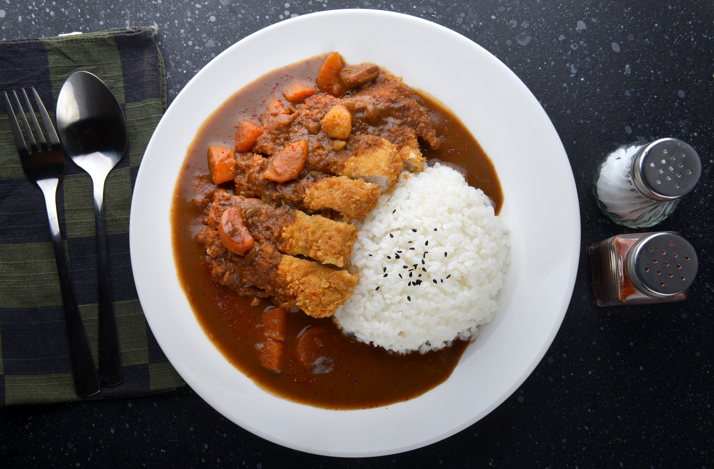

Japanese-style curry known as karē is one of the most popular dishes in the country. It started gaining popularity in Japan during the Meiji period (1868-1912), when the British introduced it to the country. During its early years, karē with rice was an expensive, gourmet dish reserved only for the wealthy.
Meal prep time : 1 hours
Servings : 3-4